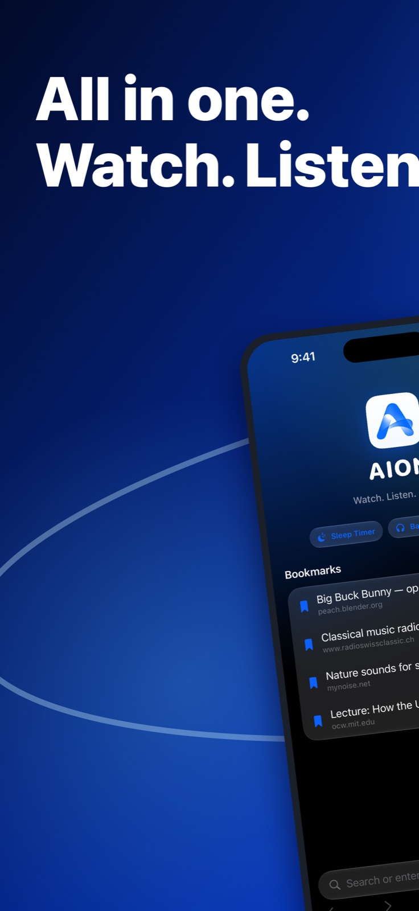
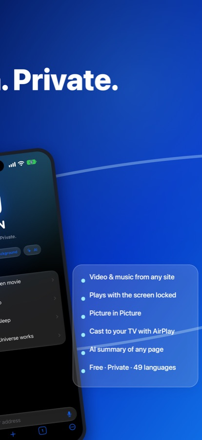
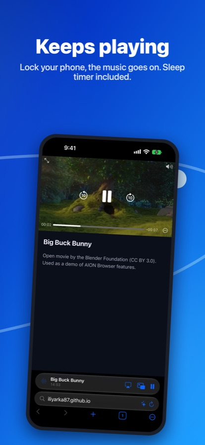
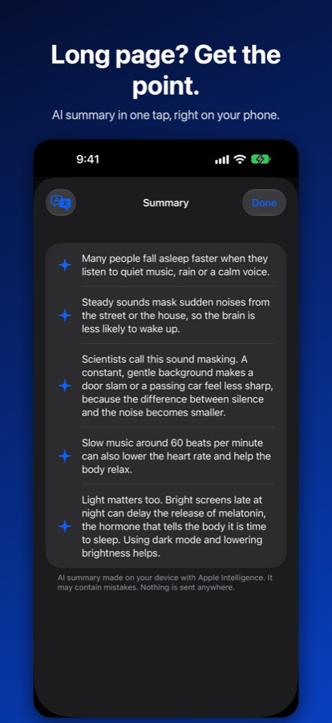
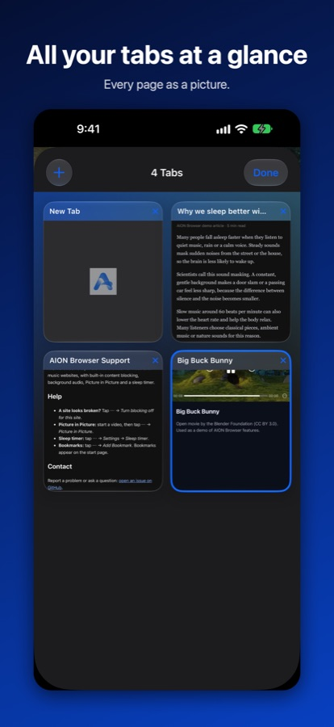
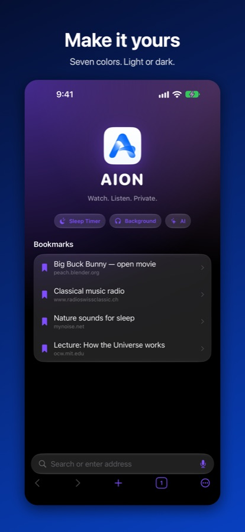

A calm, private browser for video and music websites. Keep listening with the screen locked, cast to your TV, and fall asleep with a sleep timer.

Lock your phone or switch apps, the music goes on.
Video floats over any app while you do something else.
Cast to your TV or speakers in one tap.
A countdown on your Lock Screen and in the Dynamic Island.
Key points of any page, made on your device.
No accounts, no analytics, no servers. Clear everything in one tap.




